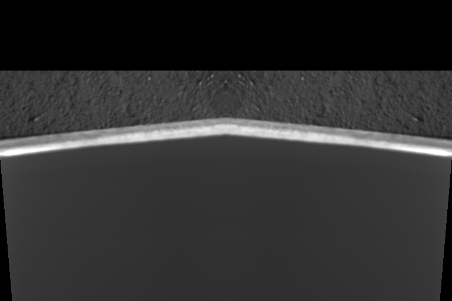

Selected Area Milling
When simple box-like patterns will not suffice, user of pytribeam can utilized the selected_area pattern type, which generates a stream file based off a masked image. Originally designed for non-prismatic or non-rectangular sample shapes, this approach enables users to create an image processing workflow based off the ion image taken at the start of the FIB step type to make arbitrary patterns defined on a per-pixel basis. Unlike other supported pattern types, the selected_area pattern type has its own set of user defined parameters, including:
-
dwell_us (float): The time to dwell on each pixel in a pass in microseconds, a float. The dwell time must be a positive float and an integer multiple of the base dwell time, which is set to 25 ns in the
constantsmodule. -
repeats (int): The number of times to repeat the pattern, a positive integer.
-
recipe_file (str): The path to the recipe file that will perform image processing. The parameter must be a valid file path string with the extension
.pyand must already exist. See Implementation below for more details. -
mask_file (str): The path to the mask file created by the recipe_file script. Must be a valid file path string with the extension
.tif, and must be created by the time the recipe_file script has finished execution.
Implementation
In order to utilize the selected area milling functionality, the user must be able to create a python script that performs the necessary image processing routine to create a binarized mask. This mask can either be a true binary array image (only values of True or False), or an integer array of values containing only 0 or 1. This binary mask will be used to create a stream file.
NOTE: Mask arrays containing any other values may not work as expected. Future releases may target the utilization of scalar values to automatically adjust dwell times, but for now only fully binarized masks will create the expected behavior.
When the stream file is created, the provided image is automatically scaled to a width of 4096, with nearest neighbor interpolation only. This means that for a FIB image with horizontal field width of 500 microns, the created stream pattern will have a pixel step size of nanometers. It is important to take this pixel density into account when selecting the number of repeats for the selected area pattern.
In order to ensure that the stream pattern is scaled correctly, there will also be a single point placed in the upper left corner of the scan field at the start of the stream pattern and a single point in the lower right corner of the scan field at the end of the stream pattern (see patterning coordinate frame for more details). This enforces that the stream file will be executed using the TopToBottom scan direction and the Raster scan type.
A working example
Below is an example ion image taken of a sample pedestal in a glancing angle configuration. The image has been manipulated and mirrored across the horizontal axis in order to create a V-shaped area that would represent the area we want to mill. The black regions arise from the image manipulation in order to make a complex shape in cross-section to illustrate the utility of the selected area arpproach.
 A representative ion beam image taken of a sample pedestal in a glancing angle FIB milling configuration. The image has been synthetically manipulated with a slight rotation and mirroring operations to create a non-prismatic shape ill-suited for conventional box-type patterning geometries. Continued backtilting of the sample (higher degree of glancing) will foreshorten the width of the bright region, which has previously been machined with the laser, while reducing the amount of backtilting (less glancing angle) will increase the width of the bright region. The pedestal appears upside down as we are looking from the perspective of the ion beam, and the black areas are the result of the image manipulation to create an complex geometry region to mill.
The pedestal appears to be flipped upside down as we are imaging from the perspective of the ion beam. The laser-machined region is the bright V-shaped area near the center of the image, and the textured gray region above this is the side of our sample pedestal. Typically after laser machining the region of interest for glancing angle milling will appear much brighter than the rest of the sample.
We want to create a binarized mask of the V-shaped region of interest in order to create our stream file. The end result of our image processing produces the following image:
 The masked version of the original image after image processing. We have successfuly isolated the V-shaped region of interest without need to draw a much larger box pattern.
The masked version of the original image after image processing. We have successfuly isolated the V-shaped region of interest without need to draw a much larger box pattern.
This image was produced with the following script, which we will discuss in further detail below:
# python standard libraries
from pathlib import Path
import sys
# 3rd party libraries included with autoscript
from PIL import Image as pil_img
import numpy as np
from skimage import filters, measure
def process_image(
input_path: Path,
output_path: Path,
) -> bool:
# open the image
with pil_img.open(input_path) as test_img:
# convert to numpy array
fib_img = np.asarray(test_img)
# find and apply an Otsu filter
threshold = filters.threshold_otsu(fib_img)
segmented = fib_img > threshold
# Remove all but the largest continuous feature by:
# label connected components
labeled_img, num_features = measure.label(
segmented,
return_num=True,
connectivity=1,
)
# find largest componet:
largest = None
max_size = 0
for component in range(1, num_features + 1):
size = np.sum(labeled_img == component)
if size > max_size:
max_size = size
largest = component
# mask largest component (remove all others)
mask = labeled_img == largest
# write out image
mask = pil_img.fromarray(mask)
mask.save(output_path)
return True
if __name__ == "__main__":
# Get input and output paths passed from the subprocess:
input_path = Path(sys.argv[1])
output_path = Path(sys.argv[2])
# Process the image
process_image(
input_path=input_path,
output_path=output_path,
)
The image processing script
Looking at the above script used to generate the binarized mask, we can see there are three main sections to the script. This same rough structure should be maintained for any custom recipe file created by the user. Several of the imports in the first part must be included, and the standard entry point, if __name__ == "__main__": section should not be modified by the user. The user should only modify the process_image function to achieve the desired image processing routine. More details on the various parts of the script follow below:
-
Part 1, library imports:
The top several lines contain several
importstatements. Here we are bringing in various libraries, either native topythonor included in thepytribeampackage, to perform various tasks. The first two imports are critical and must be included in the final recipe file:# python standard libraries from pathlib import Path import sysThe remainder of the import statements can be modified by the user depending on the nature of the image processing workflow. This example uses a variety of simple tools (
pillow,numpy, andscikit-image) to import, segment, and write out image data that will already be avialable in yourpythonenvironment. -
Part 2: The image processing recipe.
All of the image processing to generate the desired binarized mask is achieved through the
process_image()function.The example script performs the following operations to generate the binarized mask image shown above: - Import the image using the
Pillowlibrary - Convert the image to anumpyarray - Apply a simple Otsu threshold - Remove all but the largest continuous feature: - Label connected components - Find the largest continuous component - Mask the largest component, removing all others - Save out the imageUsers may implement their own image processing routines and bring in any other functions or packages they deem necessary or helpful to get their desired result. It is, however, imperative that the users be sure to write out the final image as a
.tiffile before the end of theprocess_image()function. Users should there plan to retain at least the following lines, or something similar, at the end of theirprocess_image()function:# write out image mask = pil_img.fromarray(mask) mask.save(output_path) return True -
Part 3: The standard entry point.
Users should not adjust the last several lines of this example, as this is required by
pytribeamto correctly pass the user-defined settings of where to find the input grayscale ion image (automatically defined by the experimental directory, the step name, and the slice number) and where to save the ouput mask image (the mask_file user parameter). These lines allow the initiated subprocess from the mainpytribeamacquisition loop to parse parameters correctly:if __name__ == "__main__": # Get input and output paths passed from the subprocess: input_path = Path(sys.argv[1]) output_path = Path(sys.argv[2]) # Process the image process_image( input_path=input_path, output_path=output_path, )
Users can test their script by calling the following, provided they have correctly defined the variables recipe_file, input_image_path and mask_file as strings. The following should create the mask_file image at the user-defined location:
import subprocess
output = subprocess.run(
[
"python",
recipe_file, # recipe_file
input_image_path, # input path,
mask_file, # outputpath,
],
capture_output=True,
)
if output.returncode != 0:
raise ValueError(
f"Subprocess call did not execute correctly."
)